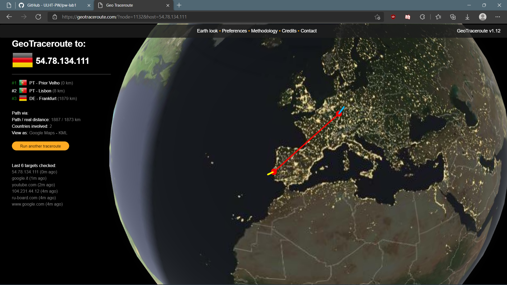
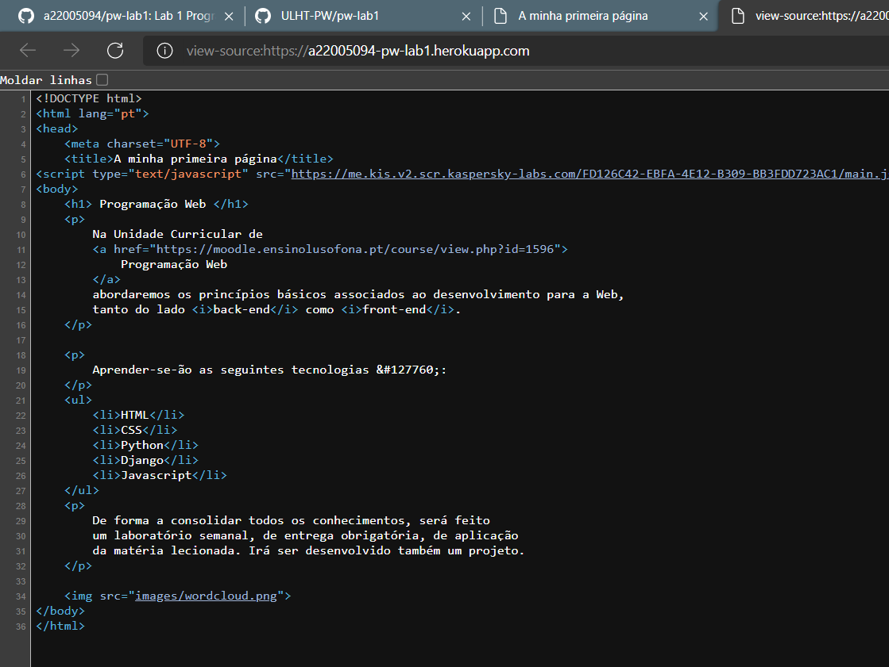

Aqui poderão encontrar as minhas respostas às questões no âmbito da Ficha1.
DISCLAIMER:
Algumas das respostas foram parcialmente afetadas derivado de
restrições na ligação à rede local da ULHT, visto que esta ficha
foi inteiramente realizada com ligação à rede eduroam.
NOTA:
Este endereço foi obtido via nslookup na linha de comandos, utilizando
diretamente o URL do Website que me foi atribuído e consultado na página de gestão do Heroku.

Este comando foi executado com dificuldades na rede Eduroam, pois entrava em loops de
Request Timed Out.
Aqui verifiquei que, estranhamente, na mesma rede e no momento de consulta dos dados, neste Website deu-me uma Localização e rotas diferentes do que foi previamente recolhido nos passos anteriores.
Confirma-se que inspecionando o código fonte, corresponde ao código da página que foi escrito.
Verifica-se que aqui são registadas medições tais como:
Elaborado com ❤️, por:
- Rui Miguel Andrade Joaquim a22005094
- Engenharia Informática @ ULHT